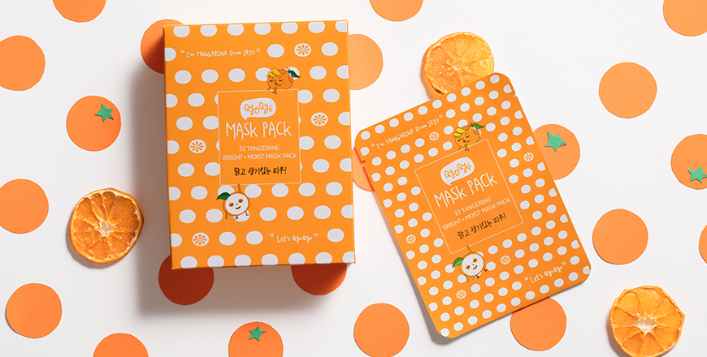
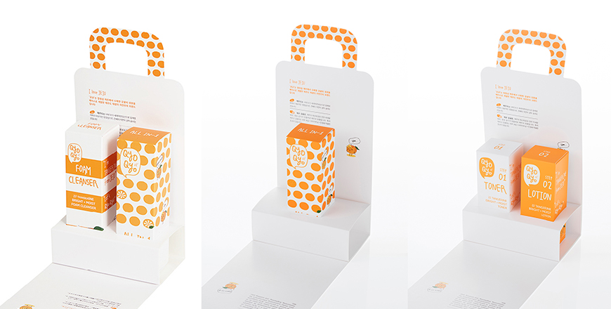

기획취재콘텐츠
- Home
- 제주라이프
- 기획취재콘텐츠
清浄済州とともに成長する化粧品ブランド 3部새로운 글


済州みかんに集中する。キョキョ
清浄済州の代表的な作物であるみかんが化粧品に生まれ変わった。済州の自然主義化粧品ブランド「キョキョQyoQyo(以下、キョキョ)」は化粧品原料の中でもみかんの皮に着目し、キョキョ タンジェリン基礎化粧品ラインやサンブロック、フォームクレンジング及びボディー製品を開発・発売した。
済州みかんは済州を代表する作物で、果樹そのものはもちろん、みかんの砂糖漬、みかんパイなど加工品の製作にも積極的に活用されている。キョキョはみかんの化粧品原料としての効能に注目した。ビタミンCが豊富で、抗酸化、美白、抗菌作用に優れたみかんは香粧製品に利用しやすい化粧品原料だ。特に、済州みかんの皮には他の果物ではあまり見られないヘスペリジン(Hesperidin)が多量に含まれており、このヘスペリジンはお肌の弾力維持に優れた効果を見せる。
- キョキョ タンジェリン ブライト＋モイスト・トナー、キョキョ タンジェリン ブライト＋モイスト ローション ⓒキョキョ -

- キョキョ タンジェリン ブライト＋モイスト マスクパック ⓒキョキョ -
キョキョ タンジェリン基礎化粧品ラインはみかんの皮抽出物をベースにバラ、コスモス、ジャスミン、百合、ノハナショウブ、ムクゲ、ハスの花の7つの花の抽出物を加えて保湿効果を極大化し、甘草成分で鎮静効果を与えた。キョキョ タンジェリン ブライト＋モイスト ピールパックは、老廃物と角質吸着効果に優れた火山灰とブライトニングに良い青みかん、保湿と鎮静機能がある済州のスズタケやアロエなど植物抽出物を組み合わせ、クレンジングはもちろん、美白及び保湿効果まで兼ね備えている。
- (左)キョキョ タンジェリン ブライト＋モイスト ピールパック, (右)キョキョ タンジェリン ブライト＋モイスト フォームクレンザー ⓒキョキョ -
済州の代表的な特産物であるみかんの皮は、実際、漢方医院で皮膚トラブル用の処方薬に含まれるほど、抗炎、抗酸化、美白作用に優れています。キョキョではこのようなみかんの皮の効能に着目し、敏感な女性のお肌に合う基礎化粧品ラインを開発しました。
2016年に誕生したブランド「キョキョ」は比較的に歴史の浅い新生ブランドだが、輸出が80％に達するほど、国境を越えてK-ビューティーのグローバルファンのドレッサーを占領している。オランダ、スウェーデン、ドイツ、ポーランド、アメリカ、中国、日本、ロシア、台湾、シンガポールなど、アジアはもちろん、ヨーロッパやアメリカまで多様な国々のオンライン・オフライン店舗でキョキョの製品が販売されている。済州新羅ホテル、ケンジントンホテルなどの有名ホテルやリゾートのギフトショップ、済州及び仁川国際空港の免税店でもキョキョ タンジェリンラインは活発に販売されており、国内外の観光客から大きな人気を得ている。

- キョキョ タンジェリン ブライト＋モイスト ギフトセット ⓒキョキョ -
ユネスコ3冠王の清浄の島、済州で生まれたブランドである点、済州の主要産物であるみかんからブランドコンセプトとストーリーを得ている点などが世界各国のバイヤーに斬新なイメージを与えています。また、最近イシューとなっている公害と気候変動でエコ原料とエコブランドが脚光を浴びています。このような流れから清浄の島、済州は非常に魅力的な場所として注目されています。ビューティー産業のトレンドである自然主義や済州、みかんという原料まで加わってキョキョというブランドと製品に高い関心が集まり、好調な反応が続いています。
K-ビューティー韓流の歴史を受けついでいるブランド、キョキョは済州みかんの皮抽出物をベース成分にしてラインアップを増やしていく計画だ。10代と20代をターゲットにしたキョキョ・ガール(girl)ラインをはじめとして2020年下半期には30-40代の女性をターゲットにした製品キョキョ・ミズ(Ms)ラインを企画している。今までは完熟果実を主要原料にして製品を開発していたが、今後は未熟果実(青みかん)で製品ラインアップを構築し、そこに済州の多様な植物性化粧品原料を結合させた多様な化粧品製品を発売することで「自然主義」と「植物性原料」というキーワードに相応しいビューティーブランドとしての成長を目指している。
다음글